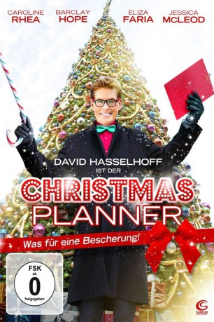
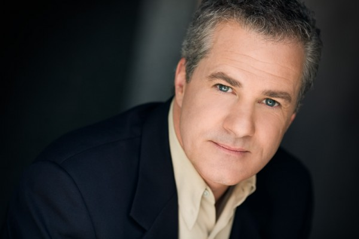
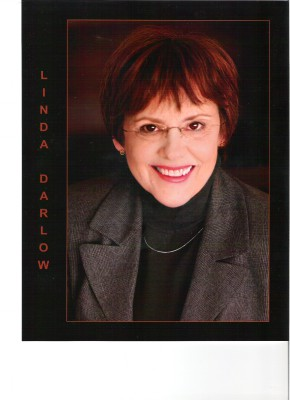
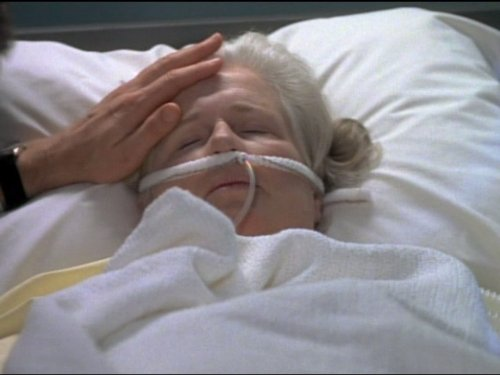
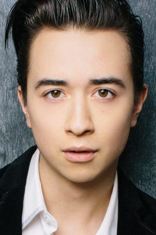

#4902 Christmas Planner - Was für eine Bescherung!
 
 IMDB-Wertung: 5.3 / 10
IMDB-Wertung: 5.3 / 10  Metascore: 0
Metascore: 0 
Weihnachten steht vor der Tür, aber die beiden ’’Workaholics’’ Maya Fletcher (Caroline Rhea) und ihr Mann Jack (Barclay Hope) sind weit davon entfernt, in Weihnachtsstimmung zu kommen. Dabei hat doch Maya ihre und Jacks Eltern zum Weihnachstabend eingeladen und außerdem noch einen wichtigen Kunden, der ein richtiges amerikanisches Weihnachtfest erleben möchte. Als Lösung aller Probleme bietet sich nur ein Christmas Planner (David Hasselhoff) an, aber es muss natürlich der Beste seines Fachs sein. Einem unvergesslichen Weihnachtsfest steht also nichts mehr im Wege – wenn nicht doch noch etwas dazwischen kommt…
Jahr: 2012
Dauer: 88 Minuten
FSK: 0
Land: Kanada Studio: Sunfilm EntertainmentTonspuren: DTS - ,
Untertitel: Deutsch,
Auflösung: 1080p (1920x1080) Größe: 4669 MB
Genre: Komödie, Weihnachten
Regisseur: John Bradshaw
Drehbuch: Meg Kasdan
Soundtrack:
Darsteller:
 David Hasselhoff als Owen
David Hasselhoff als Owen- Caroline Rhea als Maya Fletcher
-  Barclay Hope als Jack Fletcher
- Eliza Faria als Steffie Fletcher
- Jessica McLeod als Anna Fletcher
- Darien Provost als David Fletcher
- Lanette Ware als Nadine
- Aleks Paunovic als Boris Tartakov
-  Linda Darlow als Judy Fletcher
- Carrie Anne Fleming als Sister Peggy
-  Rebecca Toolan als Grandma Sally
- Toby Hargrave als Cousin Jimmy
-  Samuel Patrick Chu als Chad
- Pauline Egan als Yolanda
- Ken Camroux-Taylor als Frank Fletcher
- Eric Gibson als Patrick
- Willem Jacobson als Hastings Kid
- Jasmin Dring als Neighbor
Datei: X:\2012(A-F)\Christmas Planner - Was für eine Bescherung! (2012, FSK0, 1920x1080).mkv seit 29.11.2016
Festplatte: HD 2012(A-M)
 Es gibt insgesamt 102 Filme in der Gruppe '2012(A-F)'
Es gibt insgesamt 102 Filme in der Gruppe '2012(A-F)'